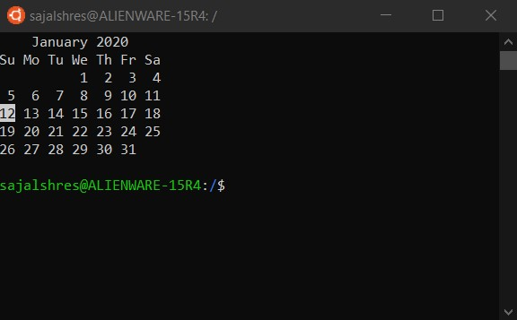

Before We Begin¶
Before we begin, lets address some of the skills that all developers need regardless of their specialization.
Basic Terminal
Version Control - Git or SVN
How the Web works
Basic Terminal / Command Line¶
A little bit of history¶
Way back in the 1960s — 70s, computers were becoming more than just calculators. They could save files to disk and have multiple running applications with multiple users. But these things were difficult to control and easy to break. Thankfully, there was a very smart idea to cover all these internal bits in a nice, usable shell.
These shells have since evolved to be Windows desktop, Mac OS, and all the touchy screeny bits of your phone. Basically all the user interaction stuff. They make your computer easy to use and (reasonably) hard to break.
But before these shells started looking pretty and graphical, they were just a command line. You would type something in, and you would get a response. They looked like this:

This particular shell is called bash which is short for “Bourne Again SHell” because before that there was the “Bourne Shell” by Stephen Bourne. Never let a software engineer name something that will end up lasting.
There’s a rich history of shells, and these “Unix style” shells began with Unix System 1’s shell in 1969. But even that was influenced by older programs such as RUNCOM. If you’ve ever noticed that some config files end in “rc” (e.g .vimrc), thats why.
If these shells haven’t changed since the 1960s, then why do developers keep on using them?
Because they haven’t really changed since the 60s. Graphical interfaces for your phone or computer fashionably change with every update (with usability improvements), but command line shells don’t. When you are scripting things or dealing with an entire farm of servers, you really don’t want your (user) interface to change, as it will break your scripts.
The first command¶
sajalshres@ALIENWARE-15R4:/$ whoami
sajalshres
PS C:\Users\Sajal Shrestha> whoami
alienware-15r4\sajal shrestha
The very basics¶
Each operating systems has a slightly different set of commands while some may share the same, some will differ.
Learn about a command¶
Many commands you can type at the command prompt have built-in help that you can display and read
Linux:
$ man ls
PowerShell:
PS C:\Users> Get-Help Get-Location
Create a file¶
Linux:
$ touch python.txt
PowerShell:
PS C:\Users> New-Item -ItemType File -Name python.txt
Copy¶
Linux:
$ cp python.txt python_copy.txt
PowerShell:
PS C:\Users> Copy-Item python.txt python_copy.txt
Move¶
Linux:
$ mv python.txt python_practice/
PowerShell:
PS C:\Users> Move-Item python.txt python_practice\
Remove¶
Linux:
$ rm python.txt
$ rm -r python_practice
PowerShell:
PS C:\Users> Remove-Item python.txt
PS C:\Users> Remove-Item python_practice -Recurse
Redirect Output¶
Linux:
$ ls > list_directory.txt
$ ls >> list_directory.txt # Append
PowerShell:
PS C:\Users> ls > list_directory.txt
PS C:\Users> ls >> list_directory.txt # Append
grep Search¶
Linux:
$ grep 'pau' names.txt
PowerShell:
PS C:\Users> Select-String -Path names.txt -Pattern 'pau'
Pipe command¶
The | command is called a pipe. It is used to pipe, or transfer, the standard output from the command on its left into the the standard input of the command on its right.
Linux:
$ echo "Hello World" | wc -w
PowerShell:
PS C:\Users> Write-Output "Hello World" | Measure-Object -word
Version Control - Git¶
Version control is a system that keeps track of changes to a file or group of files over time. When you have a history of these changes, it lets you find specific versions later, compare changes between versions, recover files you may have deleted, or revert files to previous versions.
Git and SVN both are feasible for various workflows and version control systems, But since Git is more popular, it seems like a no-brainer for us.
Three sections of a Git Project¶
A conventional Git project will have three main sections:
Git directory¶
Located in project-path/.git/ is where Git stores everything to tack in-and-outs of project including metadata, object databases, versions of project files.
Working directory (or tree)¶
It is the place where a user makes local changes to project. This directory pulls the project files from Git directory’s object database and place them on the working directory.
Staging area¶
Sometimes also called as index, stage, or cache, this is a file that stores information about what will go into your upcoming commit. A commit tells Git to save the stage changes.
Git will take a snapshot of the files and permanently store them in the Git directory.
Each file in a Git project will maintain following states:
Committed
Modified
Staged
Configure your Git Environment¶
git config command will allow us to customize your Git environment. Configuration is stored at three levels:
System (
--system)User (
--global)Project (
--local)
$ git config --global user.name "SajalShres" : Update the user’s name
$ git config --global user.email "sajal.shres@gmail.com" : Update user’s email
Initialize Repositories¶
$ git clone : Make existing directory into a Git project
$ git clone [URL or SSH] : Clone or download a repository that already existing in a remote location.
Branches¶
Any commits you make will be made on the branch you’re currently “checked out” to.
$ git status : Check status of your local changes and branch
$ git branch [branch-name] : Create new branch branch-name
$ git checkout [branch-name] : Switch to a branch-name and update working directory.
$ git merge [branch-name] : Combine branch-name history into current branch. This is usually done in pull requests.
$ git branch -d [branch-name] : Delete the branch-name branch
Making Changes¶
$ git add [file..s] : Stage (Snapshots) the changed files.
$ git commit -m "[message]" : Take a snapshot of staged files.
$ git log : Lists version history for the current branch
$ git log --follow [file] : Lists version history for a file, including renames
$ git diff [source-branch] [target-branch] : Shows content differences between two branches
$ git show [commit] : Outputs metadata and content changes of the specified commit
Synchronize your Changes¶
$ git fetch : Get history from the remote branches
$ git merge : Combines remote tracking branches into current local branch
$ git push : Uploads all local branch commits to remote repository
$ git pull : Updates your current local working branch with all new commits from the corresponding remote branch. (Combination of git fetch and git merge)
Mistakes - That’s Nice¶
$ git reset [commit] : Undoes all commits after [commit], preserving changes locally
$ git reset --hard [commit] : Discards all history and changes back to the specified commit
Warning: Changing history can have have hazardous effect.
Authenticate with SSH¶
Check for existing SSH Key¶
Check that there are no
rsafiles here before continuing$ ls -al ~/.sshCreate
.sshdirectory if it doesn’t exists$ mkdir $HOME/.ssh
Generate a new SSH Key¶
$ ssh-keygen -t rsa -b 4096 -C "your_email@example.com"
Add RSA Key to remote system¶
Copy the RSA Key to clipboard
Paste it to remote system
How the Web works¶
How the web works provides a simplified view of what happens when you view a webpage in a web browser on your computer or phone.
This theory is not essential to writing web code in the short term, but before long you’ll really start to benefit from understanding what’s happening in the background.
Clients and servers¶
Computers connected to the web are called clients and servers. A simplified diagram of how they interact might look like this:

Clients are the typical web user’s internet-connected devices (for example, your computer connected to your Wi-Fi, or your phone connected to your mobile network) and web-accessing software available on those devices (usually a web browser like Firefox or Chrome).
Servers are computers that store webpages, sites, or apps. When a client device wants to access a webpage, a copy of the webpage is downloaded from the server onto the client machine to be displayed in the user’s web browser.
In addition,
Your internet connection: Allows you to send and receive data on the web.
TCP/IP: Transmission Control Protocol and Internet Protocol are communication protocols that define how data should travel across the web.
DNS: Domain Name Servers are like an address book for websites. When you type a web address in your browser, the browser looks at the DNS to find the website’s real address before it can retrieve the website. The browser needs to find out which server the website lives on, so it can send HTTP messages to the right place.
HTTP: Hypertext Transfer Protocol is an application protocol that defines a language for clients and servers to speak to each other. This is like the language you use to order your goods.
Component files: A website is made up of many different files, which are like the different parts of the goods you buy from the shop. These files come in two main types:
Code files: Websites are built primarily from HTML, CSS, and JavaScript.
Assets: This is a collective name for all the other stuff that makes up a website, such as images, music, video, Word documents, and PDFs.
So how it happens?¶
When you type a web address into your browser:
The browser goes to the DNS server, and finds the real address of the server that the website lives on.
The browser sends an HTTP request message to the server, asking it to send a copy of the website to the client. This message, and all other data sent between the client and the server, is sent across your internet connection using TCP/IP.
If the server approves the client’s request, the server sends the client a “200 OK” message, which means “Of course you can look at that website! Here it is”, and then starts sending the website’s files to the browser as a series of small chunks called data packets.
The browser assembles the small chunks into a complete website and displays it to you.